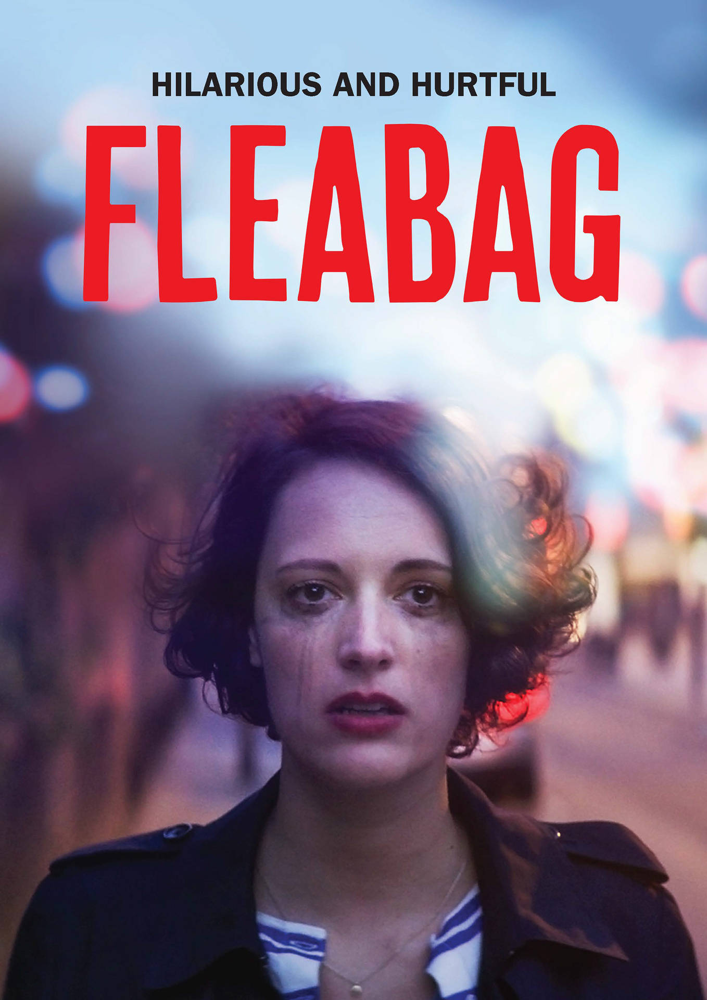
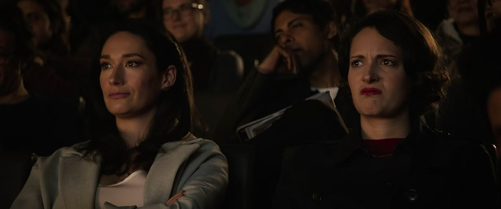
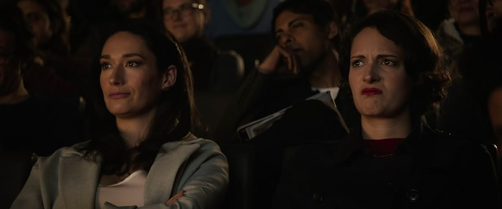

Description
A dry-witted woman, known only as Fleabag, has no filter as she navigates life and love in London while trying to cope with tragedy. The angry, grief-riddled woman tries to heal while rejecting anyone who tries to help her, but Fleabag continues to keep up her bravado through it all. Comic actress Phoebe Waller-Bridge stars as the titular character on the series, which is based on Waller-Bridge's 2013 one-woman show of the same name.
Screenshots
 

Famous Dialogues
"That's the very reason why they put rubbers on the end of pencils....because people make mistakes."
"I think you know how to love better than any of us. That's why you find it all so painful."
"Here's to peace. And those who get in the way of it."